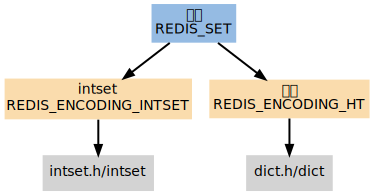
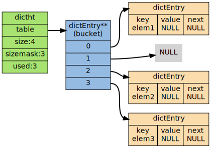

集合
REDIS_SET 集合 是 SADD , SRANDMEMBER 等命令的操作对象， 它使用 REDIS_ENCODING_INTSET 和 REDIS_ENCODING_HT 两种方式编码：

编码
第一个 添加到集合的元素， 决定了创建集合时所使用的编码：
- 如果第一个元素可以表示为 long long 类型值（也即是它是一个 整数 ）， 那么集合的初始编码为 REDIS_ENCODING_INTSET
- 否则，集合的初始编码为 REDIS_ENCODING_HT
切换
如果一个集合使用 REDIS_ENCODING_INTSET 编码， 那么当以下任何一个条件被满足时， 这个集合会被转换成 REDIS_ENCODING_HT 编码：
- intset 保存的 整数值个数 超过 server.set_max_intset_entries （默认值为 512 ）
- 试图往集合里添加一个新元素，并且这个元素 不能 被表示为 long long 类型（也即是，它不是一个整数）
字典
当使用 REDIS_ENCODING_HT 编码时， 集合将 元素 保存到 字典的键 里面， 而字典的值则统一设为 NULL 。作为例子， 以下展示了一个以 REDIS_ENCODING_HT 编码表示的集合， 集合的成员为 elem1 、 elem2 和 elem3 ：

命令
Redis 集合类型命令的实现， 主要是对 intset 和 dict 两个数据结构的操作函数的包装， 以及一些在两种编码之间进行转换的函数， 大部分都没有什么需要解释的地方， 唯一比较有趣的是 SINTER , SUNION 等命令之下的算法实现， 以下三个小节就分别讨论它们所使用的算法
交集
SINTER 和 SINTERSTORE 两个命令所使用的求并交集算法可以用 Python 表示如下：
# coding: utf-8 def sinter(*multi_set): # 根据集合的基数进行排序 sorted_multi_set = sorted(multi_set, lambda x, y: len(x) - len(y)) # 使用基数最小的集合作为基础结果集，有助于降低常数项 result = sorted_multi_set[0].copy() # 剔除所有在 sorted_multi_set[0] 中存在 # 但在其他某个集合中不存在的元素 for elem in sorted_multi_set[0]: for s in sorted_multi_set[1:]: if (not elem in s): result.remove(elem) break return result
算法的复杂度为 \(O(N^2)\) ， 执行步数为 \(S*T\) ， 其中 \(S\) 为 输入集合中基数最小的集合元素数量 ， 而 \(T\) 则为 输入集合的数量
并集
SUNION 和 SUNIONSTORE 两个命令所使用的求并集算法可以用 Python 表示如下：
# coding: utf-8 def sunion(*multi_set): result = set() for s in multi_set: for elem in s: # 重复的元素会被自动忽略 result.add(elem) return result
算法的复杂度为 \(O(N)\)
差集
Redis 为 SDIFF 和 SDIFFSTORE 两个命令准备了两种求集合差的算法：
算法一定义如下：
# coding: utf-8 def sdiff_1(*multi_set): result = multi_set[0].copy() sorted_multi_set = sorted(multi_set[1:], lambda x, y: len(x) - len(y)) # 当 elem 存在于除 multi_set[0] 之外的集合时 # 将 elem 从 result 中删除 for elem in multi_set[0]: for s in sorted_multi_set: if elem in s: result.remove(elem) break return result
这个算法的复杂度为 \(O(N^2)\) ， 执行步数为 \(S*T\) ， 其中 \(S\) 为 输入集合中基数最小的集合元素数量 ， 而 \(T\) 则为 除第一个集合之外其他集合的数量
算法二定于如下：
# coding: utf-8 def sdiff_2(*multi_set): # 用第一个集合作为结果集的起始值 result = multi_set[0].copy() for s in multi_set[1:]: for elem in s: # 从结果集中删去其他集合中包含的元素 if elem in result: result.remove(elem) return result
这个算法的复杂度同样为 \(O(N^2)\) ， 执行步数为 \(S\) ， 其中 \(S\) 为 所有集合的基数总和
Redis 使用代码决定该使用那个求差集算法， 程序用 Python 表示如下：
# coding: utf-8 from sdiff_1 import sdiff_1 from sdiff_2 import sdiff_2 def sdiff(*multi_set): # 算法一的常数项较低，给它一点额外的优先级 algo_one_advantage = 2 algo_one_weight = len(multi_set[0]) * len(multi_set[1:]) / algo_one_advantage algo_two_weight = sum(map(len, multi_set)) if algo_one_weight <= algo_two_weight: return sdiff_1(*multi_set) else: return sdiff_2(*multi_set)